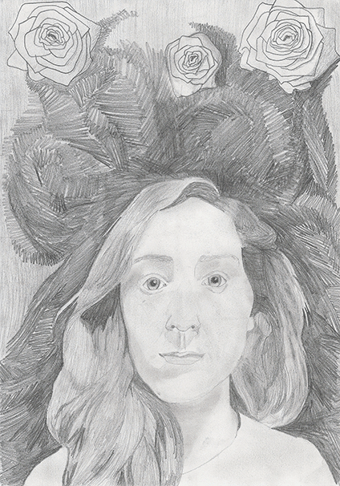

Over mij
Van kinds af aan heb ik een drang gevoeld om mij creatief te uiten, te zien aan de grote hoeveelheid stiften die ik heb verbruikt. Bij mijn studiekeuze vond ik het van belang deze creativiteit te kunnen benutten en niet gelimiteerd te worden. Ik stuitte op de studierichting ICT & Media Design en vond daarin een wereld van ontdekkingen en nieuwe mogelijkheden. Wat mij het meest fascineerde was de invloed die technologie kan hebben op ons dagelijks leven en hoe technologie evolueert over tijd.
Vanuit mijn bacheloropleiding ben ik doorgestroomd naar de master Human-Technology Interaction (HTI). Als HTI engineer ben je bezig met onderwerpen die een diepgaande kennis van zowel menselijke als technologische aspecten vereisen. Mijn doel als HTI’er is om kennis op het gebied van de menselijke perceptie en cognitie, sociale psychologie en technologie te gebruiken om de interactie tussen mens en technologie te optimaliseren. Vaak benodigd dit onderzoek naar en de ontwikkeling van technieken die nu nog onconven- tioneel zijn, maar in de toekomst een grote rol kunnen spelen.
Ik wil nu graag een volgende stap zetten en ik ben dan ook op zoek naar een baan die het mij mogelijk maakt mijn opgedane kennis te benutten. Alhoewel ik goed zelfstandig kan werken, vind ik het nog veel leuker om samen te werken in een team. Verder kijk ik er naar uit om nieuwe ervaringen op te doen en mijn kennis uit te breiden; je bent nooit uitgeleerd.
Opleidingen
1. Master Human Technology Interaction
TU/e Eindhoven, 2012 - 2015
Als Human-Technology Interaction (HTI) engineer ben je meestal bezig met onderwerpen die een diepgaande kennis van zowel menselijke als technologische aspecten vereisen. De studierichting HTI houdt zich bezig met onderwerpen zoals gebruiksvriendelijkheid, ergonomie, perceptie, cognitie, sociale psychologie en consumentengedrag. Tegelijkertijd wordt er als HTI’er van je verwacht dat je deze onderwerpen kunt koppelen aan technische kennis om zo producten te ontwikkelen die die voor het dagelijks leven van de gebruiker een verbetering opleveren.
2. Internationale semester
UHasselt Belgie, 2014 - 2015
Tijdens mijn internationale semester heb ik aan de Universiteit Hasselt de volgende vakken gevolgd van de Master Informatica (richting: Human-Computer Interaction): Gebruikers- gerichte Systeemontwikkeling, Trends in de HCI, 3D Interactie en Virtuele Omgevingen, Multimediadesign, Technologieën en Tools voor User Interfaces.
3. Bachelor ICT & Media Design
Fontys Hogeschool Eindhoven, 2008 - 2012
De studierichting ICT & Media Design richt zich op een combinatie van communicatie, ICT en design. Het onderwijs is toegespitst op het bedenken en ontwerpen van toepassingen van nieuwe media. Gedurende mijn bachelorstudie heb ik eveneens de minor Lifestyle gevolgd. Deze minor behandelde de ontwikkeling van intelligente systemen voor de verbetering en ondersteuning van het dagelijks leven van mensen.
Projecten
Master Thesis
Master thesis: In debt to a virtual other
Oktober 2015: Om met elkaar te concurreren, maken bedrijven online gebruik van gepersonaliseerde content en een persoonlijke service. Dit vereist echter het verzamelen van persoonlijke informatie van gebruikers, die informatie vaak met tegenzin prijs geven.
Oorzaak van deze onwilligheid is mogelijk een gebrek van menselijke warmte en sociabiliteit in de online ervaring. Een manier om menselijk gedrag te beïnvloeden is om overtuigingstechnieken te gebruiken. Voor mijn master thesis heb ik onderzocht of een meer menselijke interactie, d.w.z. het toepassen van de norm van wederkerigheid en het tonen van een virtueel persoon, een positief effect heeft op vertrouwen in en zelfonthulling richting de gebruikte technologie. In een online experiment werden participanten door een sociale agent begeleid bij het invullen van een enquête. Deze agent kon drie verschillende visuele representaties aannemen. Voorafgaand aan de enquête ontving de helft van de participanten een gratis loterij kaartje.
De resultaten tonen een correlatie van vertrouwen met antropomorfisme en attractiviteit van de virtuele persoon. Echter gaven participanten meer informatie prijs als de interactie minder menselijk was. Een mogelijke verklaring is dat antropomorfisme het waargenomen risico van zelfonthulling verhoogt.

Onderzoeksproject
Trainingsapplicatie voor
MS-Patiënten
Trainingsapplicatie voor MS-Patiënten
September 2014: Spierverzwakking, spraakstoornissen en cognitieve stoornissen zijn veel voorkomende klachten van patiënten met Multiple Sclerose (MS).
Vanuit het vak Gebruikersgerichte Systeemontwikkeling en in samenwerking met Reval (studiecentrum voor revalidatie- onderzoek) werd aan ons gevraagd een prototype van een trainingsapplicatie voor MS patiënten te ontwerpen. Patiënten konden deze applicatie op een tablet gebruiken om zo hun motorische en cognitieve vaardigheden te trainen.
Gedurende het project hebben we gebruik gemaakt van een User Centered Design (UCD) Approach. Dit betekend dat de gebruiker tijdens verschillende stappen bij het project betrokken was.
UCD proces
1. Gebruikersonderzoek
In de eerste fase van het project is er met behulp van interviews en observaties informatie verzameld over de gebruiker en de applicatie. Deze informatie is gebruikt voor het maken van persona's, scenario's en een storyboard.
2. Interactie analyse
Met behulp van informatie verkregen uit het gebruikersonderzoek werden taakmodellen en dialoogmodellen ontworpen. Taakmodellen tonen de structuur, volgorde en onderlinge relaties tussen taken. In een dialoogmodel worden de taken van het taakmodel aan interface elementen gekoppeld.

3. Prototyping
De dialoogmodellen zijn gebruikt voor het maken van zowel een low-fidelity als een high- fidelity prototype. Het low-fidelity prototype bestond uit een filmpje van een paper-prototype. Aan de hand van feedback van de opdrachtgever hebben we het low-fidelity prototype vervolgens omgezet in een high-fidelity prototype. Bij de realisatie van dit prototype heb ik gebruik gemaakt van het programma Axure RP.

4. Usability test
Tijdens een evaluatie van het high-fidelity prototype heb ik het gebruik van de applicatie door studenten en therapeuten geobserveerd. Na het doorlopen van een aantal opdrachten met de applicatie, werden de testpersonen gevraagd om een korte vragenlijst in te vullen. Aan de hand van de evaluatie zijn een aantal verbeterpunten opgesteld.

Brick Builder met Leap Motion
ShareABeat
ShareABeat
December 2014: Een toenemende hoeveelheid interactie vindt plaats niet in een face-to-face setting, maar met het gebruik van communicatie technologieën. Deze zijn echter niet geschikt voor het uitvoeren van taken of sociale functies die een rijke, gedetailleerde en genuanceerde communicatie vereisen.
Door het toevoegen van lichaamsfuncties aan gemedieerde communicatie, wordt de interactie persoonlijker. Bij het delen van media content is het vaak moeilijk de reactie van een andere op deze content te achterhalen. De reactie van de ontvanger is echter een belangrijk onderdeel van het delen van media. ShareABeat maakt het delen van media content op sociale platforms persoonlijk door het toevoegen van empathische annotaties. Deze annotaties komen in de vorm van vibraties gebaseerd op een gemeten verhoogd hartslag van de kijker van de media content. De applicatie draait op een combinatie van smartphone en smartwatch. User studies zijn nodig om te testen of de ShareABeat applicatie daadwerkelijk het delen van media meer intiem maakt en de reactie die kijkers hebben duidelijker wordt.

Mediated Touch
Trust in Slef-similar Agents
Afstudeerstage Fontys
Fitness Game
Ziekenhuis Rustruimte
Stage Philips
Competenties
Vaardigheden met Programmeren
Tijdens mijn bachelorstudie heb ik les gehad in HTML (XHTML 1.0), voor het maken van websites en web-apps. Daarnaast heb ik gedurende het laatste jaar van deze studie kennis gemaakt met HTML5.
Naast HTML heb ik ook les gehad in CSS, welke wordt gebruikt voor het koppelen van stijlinformatie aan de HTML-structuur.
Webagina's opgebouwd uit puur HTML en CSS zijn vaak statisch, voor het maken van dynamische websites en applicaties heb ik geleerd JavaScript te gebruiken.
Om pagina's dynamischer te maken kan ik naast JavaScript ook gebruik maken van PHP, hierbij denk ik onder andere aan "form handling".
Webcontent dient vaak opgehaald te worden uit een database. Input van de gebruiker moet daarintegen vaak opgeslagen te worden in een database. Vanuit mijn bachelorstudie heb ik geleerd voor dit soort taken gebruik te maken van SQL.
Tijdens het eerste halve jaar van mijn bachelorstudie heb ik les gehad in C#, daarnaast heb ik tijdens verschillende projecten gebruik gemaakt van deze taal.
Python heb ik gebruikt bij mijn onderzoeksproject, voor de aansturing van en het verwerken van de sensor informatie van een robot.

Tijdens mijn stage bij Philips heb ik gebruik gemaakt van ActionScript 3 voor het maken van een TV interface. Ik ben hierdoor bekend geworden met het princiepe van object-georiënteerd programmeren.
Vormgeving & Creativiteit
Ik zie User Interface (UI) design als een gestructureerd process, echter komt er ook creativiteit bij kijken. UI design heeft immers een visuele kant en elke interface dient zijn eigen unieke en herkenbare stijl te hebben. Als kind vond ik het al fantastisch om me bezig te houden met vormen en kleuren. Ik kan dan ook met gemak uren besteden aan het ontwerpen van een interface, zonder mij ook maar een moment te vervelen. Gedurende mijn opleidingen heb ik al voor verschillende soorten devices interfaces ontworpen (bijvoorbeeld voor de: TV, smartphone, tablet en PC). Daarnaast heb ik les gehad in: typografie, kleurgebruik, huisstijl ontwerp, webdesign, GUI design, infograpgics design, animaties en fotografie.
Usability & Interaction design
Interaction design is gericht op de structuur en het gedrag van een systeem. Het doel is om de gebruiker met zo weinig mogelijk acties de gewenste taak uit te laten voeren. Twee belangrijke elementen van een goed interaction design zijn consistentie en het inspelen op de verwachtingen van de gebruiker. Vanuit mijn opleidingen heb ik geleerd om bij interface ontwikkeling niet alleen te kijken naar esthetiek, maar ook voornamelijk te denken aan de usability principes (waarvan consistentie er één is). Om een goede interactie te waarborgen, start ik een project graag met een stukje gebruikersonderzoek. Uit zo een onderzoek ontstaan vaak taakmodellen en dialoogmodellen. Zulke modellen tonen de systeem- functionaliteiten, acties die de gebruiker dient uit te voeren en de benodigde schermonderdelen. Vervolgens worden taak- en dialoog- modellen omgezet naar het eerste prototype. Het maken van makkelijk aanpasbare, tussentijdse prototypes zorgt ervoor dat bruikbaarheidsfouten en structurele fouten vroegtijdig opgespoord en aangepast kunnen worden.
Onderzoek & Testen
Het waarborgen van een goede User Experience houdt ook in dat in verschillende fasen van de System Development Life Cycle onderzoek wordt verricht naar zowel de gebruiker als het product. Bij de uitvoering van onderzoeksprojecten heb ik kennis opgedaan met een groot aantal onderzoeksmethoden. Zo heb ik interviews gehouden met klanten en experts, gebruikers geobserveerd, experimenten uitgevoerd, focus- groepen georganiseerd, enquêtes afgenomen en prototypes getest. Daarnaast heb ik tijdens onderzoeksprojecten ook geleerd de uit onderzoek verkregen data op een statistische wijze te analyseren en uit grote hoeveelheden data specifieke conclusies te trekken.
Samenwerken & Zelfstandigheid

Ik zie zelfstandigheid als een van mijn goede eigenschappen. Deze zelfstandigheid wordt mogelijk gemaakt door een gestructureerd proces aanpak en goede planning. Alhoewel ik goed zelfstandig kan werken, vind ik het nog veel leuker om samen te werken in een team. Gedurende mijn opleidingen heb ik in een groot aantal projectgroepen gewerkt. Hierbij heb ik ook met opdrachtgevers vanuit verschillende vakgebieden samen- gewerkt. Ik vind het leuk om kennis te delen, van elkaar te leren, elkaar te inspireren en gezamenlijk tot nieuwe oplossingen te komen. Ik vind het altijd belangrijk om binnen een team mijn steentje bij te dragen en ga dan ook niet zitten wachten totdat mij een taak opgedragen wordt.